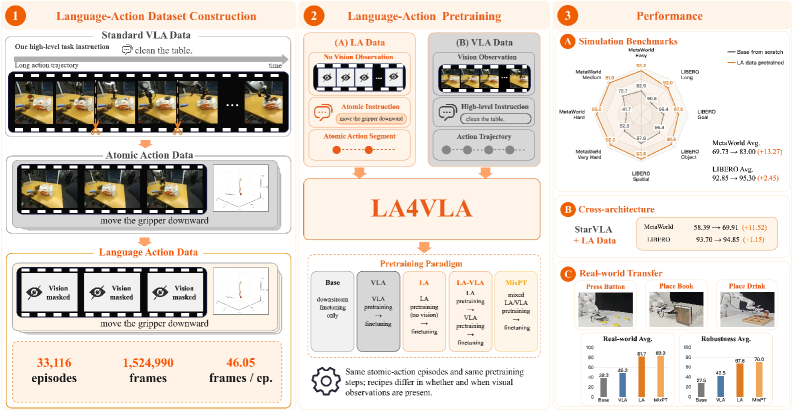
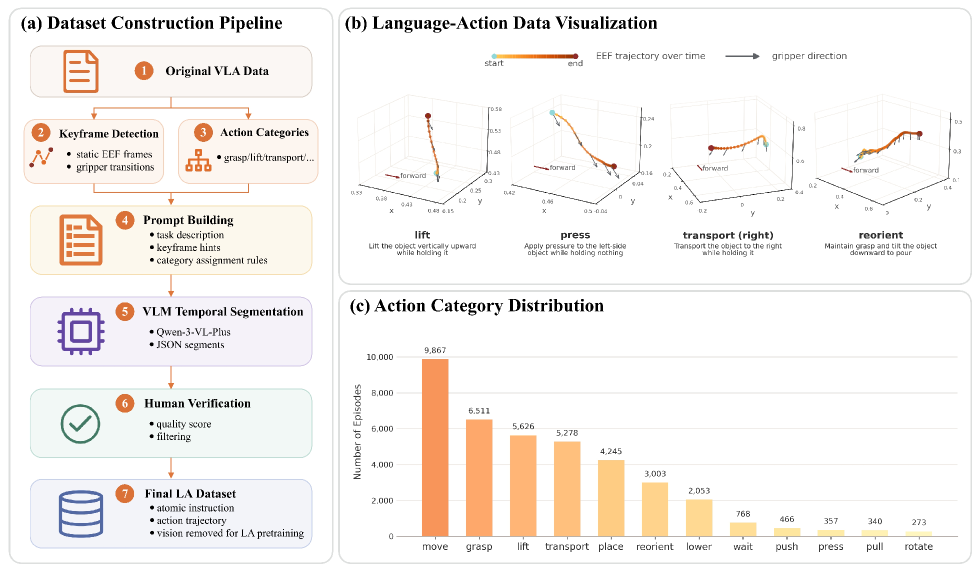
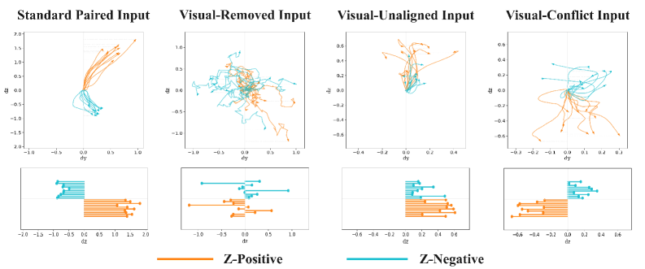
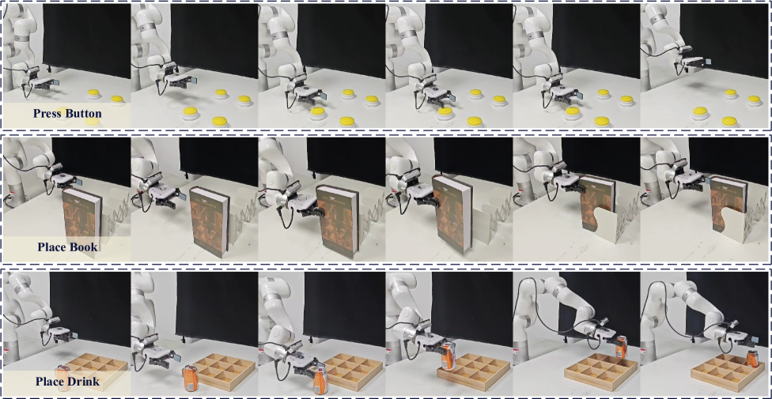

视觉-语言-动作（VLA）模型通常用联合映射视觉观测和语言指令来预训练。但密集的视觉-动作监督会压倒相对稀疏的语言-动作信号，于是策略可能依赖视觉捷径，而非真正学会「语言如何条件化动作的执行」，这让策略对视觉变化格外敏感。LA4VLA 反其道而行：提出一个语言-动作预训练框架，让策略在完全看不到视觉观测的情况下，习得语言条件化的动作先验。 这些先验捕获跨任务、跨场景共享的可复用操控技能，从而减少对场景特定视觉线索的依赖。
VLA 模型在多模态机器人学习上进展显著，常通过在海量机器人演示上预训练，把视觉观测与语言指令一并映射到动作。但这条预训练管线里，视觉-动作监督通常远多于语言-动作监督，两者数量悬殊。
后果很实际：模型更容易走视觉捷径——从画面像素直接猜动作，而不去学习语言指令如何约束/条件化动作。一旦视觉输入变化（光照、背景、相机位姿稍有不同），依赖视觉捷径的策略就容易失灵，鲁棒性差。
LA4VLA 的核心诊断：问题不在视觉信息本身，而在预训练阶段语言信号被视觉信号淹没了。解决办法不是加更多语言数据去抗衡，而是在预训练这一刻干脆不让视觉参与——先单独把「语言→动作」的条件映射练扎实。

LA4VLA 把问题拆成两步。第一步构造语言-动作（LA）数据：把专家演示的轨迹按关键帧分解成原子动作段，每一段配一个对应的低层动作描述（如「向右下方移动机械臂 30 厘米」「抓取」「松开」）。
这么一重组，原来「一行轨迹 + 一串像素」的演示，就变成了一大批「指令 → 一段动作」的语言-动作对。它们的规模远超原始演示里的完整任务指令数，因为每个长演示被切成了多个原子动作单元。
关键卖点：这套 LA 数据完全从现有演示派生出，几乎不加任何代价。不要求重新采集机器人数据，不要求人工标注一整轮轨迹，只要把已有演示按动作边界切开、描述即可。论文据此构建出 LA-33K——含 3.3 万个语言-动作 episode 的数据集。

论文用一个轻量 1B 参数的 VLA 模型 LA4VLA-1B 来承载研究，并对比三种把语言-动作监督嵌入 VLA 学习的范式：
① LA-only 预训练——只喂语言-动作数据，先在一个纯文本动作的空间里把「指令→动作」条件映射训好，完全不看视觉。
② 顺序 LA-to-VLA 预训练——先用语言-动作数据预训练，再接上视觉-语言-动作数据做后续阶段训练，让语言先建立、视觉后叠加。
③ 混合 LA-VLA 预训练——把语言-动作数据和视觉-语言-动作数据混在一起联合预训练，让两条监督通道并存、互补。
三种范式的差别在于「语言对动作的约束力」何时建立、以及和视觉信号如何共存，论文逐一评估它们的效果与代价。
在仿真与真实世界（xArm6 平台）的任务上，LA 预训练的策略一致胜过与之匹配的 VLA 预训练对应物。也就是说，单靠「文本指令→动作」预训练打底，比一开始就上完整 VLA 监督更能让模型学到语言条件化的动作。
混合 LA-VLA 预训练收益最明显：把两种监督合并，平均成功率比无预训练基线最高提升 仿真 17.8 个百分点、真实世界 45.0 个百分点（Table 4/5）。
鲁棒性实验进一步印证了动机：真实世界策略在添加高斯图像噪声后，LA 预训练的策略比对照更不易退化——正因为它们不依赖视觉捷径，图像扰动造成的伤害更小（Table 6）。这直接对上了论文开头「策略对视觉变化敏感」的诊断。

方向跟随的可视化与表征分析（Figures 2/5）显示：即使在不同视觉输入配置下，LA 预训练策略仍能按指令正确决定移动方向，印证「语言条件动作先验」确实被学到、且跨视觉条件泛化。

参考：https://arxiv.org/html/2606.27295v2